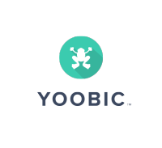

<ion-content class="login-content">
  
  <div class="btns">
    <button class="fb-connexion-btn" ion-button (click)="this.login()">Connect with Facebook</button>
    <div class="secondary-btns">
      <button class="sign-up-btn" ion-button (click)="this.login()">SIGN UP</button>
      <button class="log-in-btn" ion-button (click)="this.login()">LOG IN</button>
    </div>
  </div>
</ion-content>
